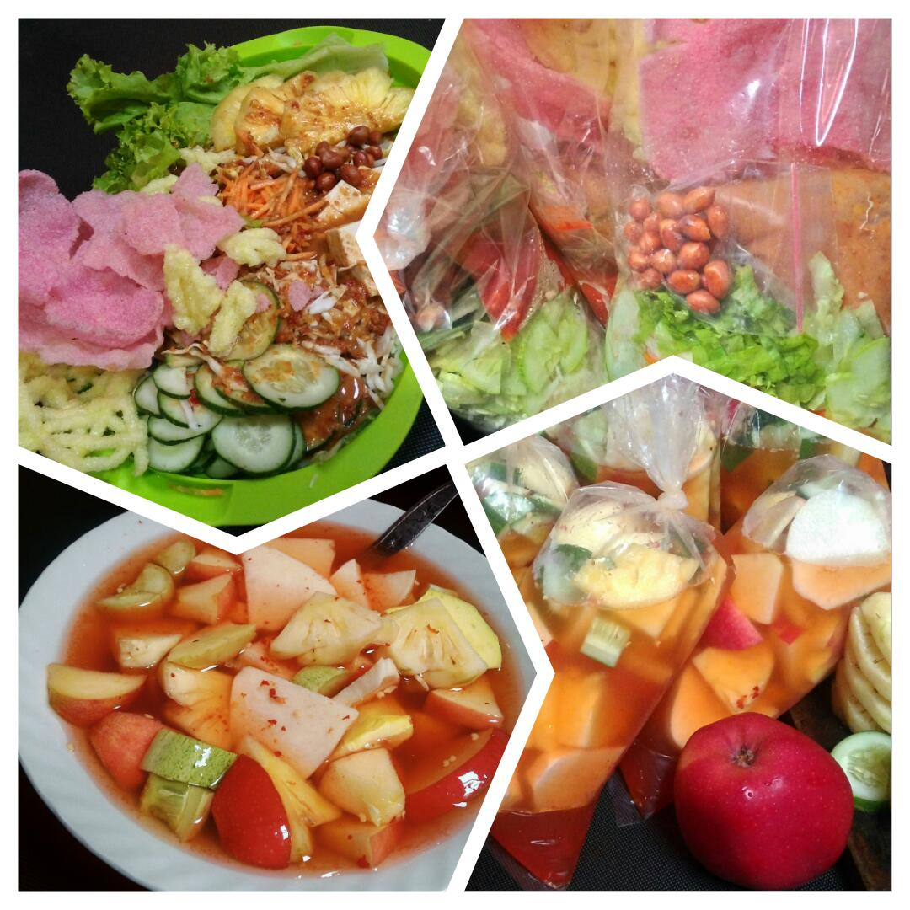

Asinan Buah dan Sayur Fageza
Pesan asinan buah atau sayur yang dibuat dengan bahan berkualitas. Cocok untuk semua acara dan selera.
Pesan Sekarang

Tentang Kami
Asinan Buah dan Sayur Fageza merupakan perpaduan asinan Betawi dan Kamboja yang sering juga disebut asinan Bogor.
Kami menjual dua varian, yaitu asinan buah yang berisi nanas, bengkoang, kedondong, dan lainnya, serta asinan sayur yang berisi toge, kol, timun, wortel, selada, tahu, dan lain-lain.